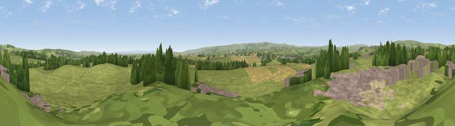

Viewpoint near Stainton
#25018 in England · top 63% of its area beats it · near StaintonWhere it is
The exact computed spot (NZ 07075 18775). Click the marker for map links.
The view, rendered

A 360° render of this exact spot computed from the terrain model, tree cover and land cover — summer colours, afternoon light, calibrated against photographs of famous viewpoints. Real trees, hedges and buildings will differ in detail.
The panorama
Grey silhouette: terrain skyline in each direction (720 bearings, Earth curvature and refraction included). Dashed green: skyline with trees (+15 m) and buildings (+8 m) as obstacles. Blue strip: how far the ground is visible on each bearing.
Where the view opens
Wedge length = distance to the farthest visible ground on that bearing (vegetation-aware). Rings at 10, 25 and 50 km.
What fills the view
70% grassland · 12% woodland · 10% cropland · 8% built-up
Angular shares of the visible panorama (visual magnitude), not map area. Landscape diversity 0.41 (0–1 Shannon).
Key numbers
More beautiful places nearby
The staircase of upgrades: each row has a higher view potential than everything closer. Driving times are estimates from straight-line distance, calibrated against real road routing — check an actual route before setting out.
| Place | Direction | Drive | Score |
|---|---|---|---|
| Viewpoint near Stainton | ESE · 3 km | ~7 min | 56.3 |
| Viewpoint near Whorlton | ESE · 5 km | ~11 min | 64.1 |
| Viewpoint near Eggleston | NW · 7 km | ~14 min | 69.7 |
| Viewpoint near Eggleston | NW · 8 km | ~16 min | 76.0 |
| Viewpoint c10024_7603 | WSW · 32 km | ~50 min | 76.9 |
| Viewpoint near East Witton | SSE · 35 km | ~53 min | 77.8 |
| Little Dun Fell | WNW · 39 km | ~58 min | 78.4 |
| Cross Fell | WNW · 41 km | ~61 min | 78.7 |
54.56416, -1.89210 · source: screening · position refined by local search. Computed location — check access rights before visiting.